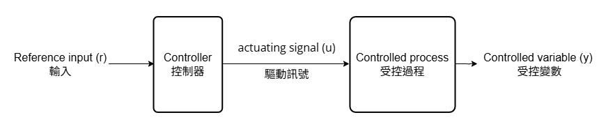

介紹控制系統#
控制系統可以簡單分為兩類:#
開迴路控制系統(Open-loop control system) :
任何變量在一開始就要想到並設定，不會自動調整輸出到目標，也就是干擾排除(disturbance rejection)能力弱。

Note
通常一個方框會代表裡面有很多複雜子系統。
閉迴路控制系統(Close-loop control system) :
相較於開迴路控制系統多拉了回授的給輸入端，使輸出可以自動調整到目標，也就是干擾排除能力強。
受控場(Plant):可以是整個實體，也可以是一個部件。例如:冷氣機(熱交換機、馬達、壓縮機)、機器人(桿臂、關節、馬達)。
感測器(Sensor):將輸出端的物理量回授給輸入端的電子信號，使
控制器可以比較輸入Reference input與回授訊號Feedback signal的差異得出error。控制器(Controller):根據
輸入與回授訊號的差異error給出驅動訊號v給受控場。
定義變數#
這是一個簡化後的閉迴路控制系統，\(G\)是結合控制器與受控場的方框，\(H\)是將輸出端回授給輸入端的方框。
Input-Output relationship (\(M\)) :
\[ M \overset{def}{=} \frac{y}{r} =\frac{G}{1+GH} \tag{eq.1.2} \]說明輸入和輸出的縮放關係，如果沒有回饋(\(H=0\))則\(M \overset{def}{=} \frac{y}{r}=G \)，如果有回饋則\(M\)會隨著\(G\)和\(H\)的頻率而變化。另外可以注意到有無回授的系統特性之一的
零點zeros從不存在(或者說是無限遠處)變成\(GH=-1\)處。Sensitivity (\(S^{M}_{G}\)) :
\[ S^{M}_{G} \overset{def}{=} \frac{\frac{\partial M}{M}}{\frac{\partial G}{G}} =\frac{\partial M}{\partial G} \frac{G}{M} = \frac{1}{1+GH} \tag{eq.1.3} \]說明該系統有多麼敏感，從定義可以得知是
輸入輸出縮放關變化的百分比除以系統性能變化的百分比。改變一個單位的外在條件(\(\Delta T \sim 1^\circ C\))，系統的性能可能改變很多(\(10s \rightarrow 15s\))，所以我們應該會希望系統應該要非常不敏感。Note
但是在我後面要提到的大氣控制就不一定會要求敏感度了，或許反而可以變成測量模式的工具。
要讓系統的敏感度降低透過\(eq.1.3\)看到可以增加\(GH\)
抗干擾能力(\(\frac{y}{disturbance}\))、抗雜訊能力(\(\frac{y}{noise}\)) :
若抗干擾能力、抗雜訊能力趨近無限大，則表示系統很能抗干擾能力、抗雜訊能力。
假設看閉迴路控制系統的圖片並將外部干擾移至控制器與受控場之間，我們可以得到:
\[\begin{split} \begin{align*} \frac{y}{d}&=\frac{P}{1+HCP} \tag{eq.1.4}\\ \frac{y}{n}&=\frac{HCP}{1+HCP} \\ \end{align*} \end{split}\]Note
得到eq1.4的方式可以想像輸出到輸入之間的關係，會直接經過的放在分子、會回授的放分母。
小補充#
若是閉迴路控制系統外面還有閉迴路控制系統包著，變數可以計算得出 :